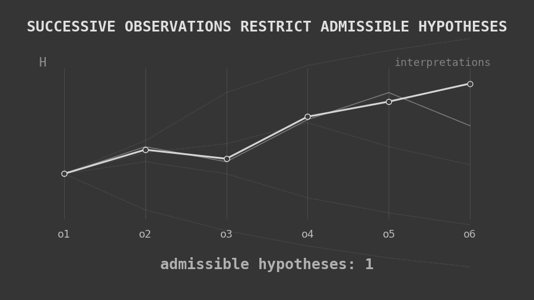

If you are looking for the mathematical proof and the formal-logical treatment, you can find it here: https://adlerzero.github.io/socionics-and-correlationism/
The attempt to study Socionics through its indiscriminate integration with other typological frameworks faces a logical problem that precedes the validity of any particular correlation. The first question is not whether a given correspondence between types is true or false, but according to what principle two distinct theoretical structures could have their categories identified, restricted, or modified by one another.
The starting point of many typological integrations appears intuitively plausible. Different theories describe the same human individual; therefore, it may seem reasonable to suppose that each theory describes a different part of a larger reality and that their results can consequently be combined within a more comprehensive theoretical structure.
That inference, however, is not authorized by the premise.
Two theories may have exactly the same individual as their object and still apprehend that individual under different aspects, employ different languages, and establish entirely different internal relations among their categories. The numerical identity of the object described does not produce identity among the descriptions made of that object.
This distinction must be preserved from the beginning.
If Socionics and a second typological theory both describe Rodrigo, Rodrigo does not become two individuals because the theories produce different descriptions. The object remains numerically identical. What may vary are the determinations that each system attributes to him.
Consequently, descriptive difference does not imply ontological difference.
But the inverse must also be preserved: ontological identity of the referent does not imply descriptive identity.
The fact that two propositions are predicated of the same person does not turn them into the same proposition. Likewise, the fact that two categories are applied to the same individual does not make them semantically identical, does not guarantee that they describe the same aspect, and does not establish that they occupy structurally equivalent positions within their respective theories.
Coreference therefore establishes only this: two theories speak about the same object.
Nothing further follows necessarily from that fact.
Identity of the Referent and Identity of the Aspect
The problem becomes clearer once we distinguish the material object from what each theory apprehends in it.
The human individual may be numerically one while remaining susceptible to multiple theoretical decompositions. One theory may organize certain phenomena according to specific functional relations; another may organize different manifestations according to motivations, dispositions, mechanisms, or conceptual structures of another kind.
In such a case, both theories are directed toward the same individual, but not necessarily toward the same aspect of that individual.
Equality of the object does not contain, by itself, equality of the aspect under which the object is apprehended.
Therefore, before establishing that a category belonging to one system is equivalent to a category belonging to another, it would be necessary to demonstrate that both categories sufficiently describe the same aspect of the object, rather than merely being applicable to the same person.
This is a much stronger requirement.
The same human event may admit psychological, sociological, neurobiological, economic, and moral descriptions. The coexistence of these descriptions does not make their concepts interchangeable. Legitimate relations between them may exist, but such relations must be established; they cannot be extracted merely from the identity of the event being described.
The same applies to typological theories.
The Need for a Rule of Passage
If two systems possess their own languages, it is not enough to observe that their categories occasionally appear similar. For a determination belonging to one theory to be transported into another, some rule is required to justify that passage.
Such a rule functions as a principle of translation.
Without it, the correspondence is not produced by the theoretical structures themselves; it is introduced by the interpreter.
This does not mean that the introduced correspondence is necessarily false. It means only that its validity has not yet been demonstrated.
This epistemological distinction is fundamental.
From the absence of a justified rule, we cannot conclude that no relation between the systems exists. We can conclude only that we do not yet possess sufficient grounds to treat an association as a necessary inference.
The burden therefore lies on whoever proposes the integration.
If someone claims that a given Socionic category necessarily corresponds to a category from another typology, that person must demonstrate in what sense the correspondence occurs, which properties are preserved, and why the observed similarities are not merely superficial, nominal, or contingent.
Even the existence of a translation is not sufficient by itself. A translation may preserve a name while destroying the structure that gave the original concept its meaning.
A theoretically relevant correspondence must therefore indicate what it intends to preserve.
It may not be necessary for a translation to preserve every property of the original category. Such a requirement would make almost every translation impossible. But the properties relevant to the claim being made must remain recognizable through the passage.
Otherwise, we do not have translation in the proper sense, but substitution.
The Same Sign Is Not Necessarily the Same Concept
This caution becomes especially necessary when two systems use numerals, words, or signs that are graphically similar.
Visual identity of a sign does not demonstrate semantic identity.
The numeral “8” employed by one theory and the numeral “8” employed by another remain graphically the same numeral. This does not mean that what each “8” denotes is theoretically identical.
The meaning of a category depends on the structure in which it is embedded.
A category receives part of its identity from the relations it maintains with other categories, from the distinctions it permits, from the mechanisms attributed to it, and from the consequences the system draws from its presence.
For this reason, extracting two categories from their respective systems, observing some external resemblance, and declaring them equivalent may erase precisely what made them conceptually determinate.
Before asserting that a category from one theory is another category from a second system, we need to know: in what domain are they being compared? Which property is being identified? By what rule was that identity established? Which structural relations remain preserved after the correspondence?
Without answers to these questions, the equivalence remains an interpretative expectation.
Correlation, Restriction, and Transformation
Much confusion arises because logically distinct operations are placed under the generic term “correlation.”
At least three levels must be distinguished.
The first is simple association.
We may observe that individuals classified in a certain way by one theory frequently appear classified in a certain way by another. At most, this establishes a comparative regularity.
The second level is restriction.
Here we no longer merely claim that two categories appear together. We claim that a given type can only, or can legitimately tend only, to correspond to a certain set of categories in the other theory.
At this point, possibilities begin to be excluded.
Such exclusion requires additional justification. We must explain why some combinations remain admissible while others do not.
The third level is transformation.
Here the claim becomes stronger still: a determination from one theory would be capable of correcting, altering, or modifying what the other theory would conclude about the individual.
In that case, we are no longer merely correlating descriptions. We are attributing constitutive power to one system over the other.
These three levels cannot be confused.
Association does not imply restriction.
Restriction does not imply transformation.
And a recurring correlation does not, by itself, demonstrate that one theory has the power to modify the internal determinations of another.
This distinction allows us to formulate a much more precise question for the correlationist.
When it is said that one type “corresponds” to another, what exactly is being asserted?
Is a similarity merely being recorded?
Are all other correlates being excluded?
Or is it being claimed that the second classification possesses sufficient authority to alter the first?
Each claim requires its own justification.
It is precisely the silent passage between these levels that makes many typological integrations logically fragile.
Integration Does Not Follow from the Mere Combination of Theories
Nor is it enough to place two systems inside a broader structure and conclude that their propositions now belong to a single inferential system.
Conceptual coexistence is not logical integration.
Two theories may each be internally coherent and still generate problems when their categories are transported into a common structure. For integration to be legitimate, rules must be established that determine how their concepts relate to one another.
A contradiction properly so called also does not arise merely because the theories produce different descriptions.
For a contradiction to exist, a proposition and its negation must be affirmed in the same sense, concerning the same aspect, and within a structure in which both are comparable.
If one system claims one thing and another claims something different, what we have first is difference.
Only after a semantic relation between the propositions has been demonstrated can we ask whether there is equivalence, incompatibility, or contradiction.
This distinction prevents divergences between theories from being artificially produced by the integration itself.
The Affect-Logic of the Interpreter
There is also a subjective dimension to the problem.
I provisionally call “the affect-logic of the interpreting subject” the process by which a correspondence initially produced by expectation, preference, or intuitive resemblance later comes to be presented as though it had been objectively discovered within the theories.
The logical problem remains the absence of a justifying rule. The psychology of the interpreter does not make an inference true or false.
But it may explain why insufficiently justified inferences can appear so convincing.
The interpreter desires an integration. Two categories appear to share certain characteristics. The interpreter intuitively decides that they should correspond. From that moment onward, individuals begin to be observed through that equivalence.
Over time, what was introduced as a presupposition reappears as an apparent result of observation.
The process becomes circular.
The interpreter presupposes that two categories correspond, interprets the data according to that correspondence, and later uses the already interpreted data as evidence that the initial correspondence was correct.
The conclusion appears to emerge from the object, but part of it was already contained in the lens through which the object was observed.
A typological theory must therefore allow the object itself to resist the expectations of the interpreter.
If no possible observation can count against a correlation, the correlation has become self-confirming.
Structural Preservation
Even when a plausible correspondence exists between two categories, a point-by-point comparison may still be insufficient.
The categories of a theory are normally not isolated elements. They belong to a network of relations.
A given characteristic may possess its meaning precisely because it occupies a certain position relative to other characteristics within the system.
Consequently, a sufficiently strong translation should preserve not merely a number of local similarities, but also the relevant relations that make that category what it is.
Otherwise, two elements may be correlated because they display a certain superficial behavior while the radically different structures from which that behavior emerges are ignored.
Similarity of effect does not demonstrate identity of mechanism.
This principle is especially important in typology because distinct structures may produce phenomenologically similar manifestations.
One person may behave similarly to another for different reasons.
The same observable behavior may emerge from different internal mechanisms, while similar mechanisms may produce different behaviors depending on the object, context, and situation.
It is therefore insufficient to correlate external effects alone.
The relation must survive examination of the structure that theoretically produces them.
The Problem of a False Dichotomy
From this, it is not necessary to conclude that two theories must remain completely independent or that one must necessarily dominate the other.
A third possibility exists: an intermediate interpretative structure capable of establishing partial relations between both systems without reducing one to the other.
Two theories may possess local correspondences.
They may share certain invariants.
They may describe partially overlapping aspects.
They may be translatable at certain points and untranslatable at others.
They may even be compared through a third model that does not belong entirely to either of them.
Integration therefore does not necessarily mean the subordination of one theory to another.
What it necessarily requires is additional structure.
The stronger the claim of integration, the stronger the justification required for this intermediate structure.
This principle allows us to preserve the relative autonomy of the theories without making comparative investigation impossible.
The Temporal Factor
Up to this point, the problem has been predominantly logical and semantic: what does the identity of the object permit us to infer about the theories that describe it?
From this point onward, a different epistemological question arises: how could we empirically discover whether certain correspondences have a basis?
The temporal factor becomes fundamental because an individual is not apprehended in full at a single moment.
An initial classification is necessarily constructed from limited information. New events, conflicts, choices, contexts, and manifestations add data. As this occurs, some initially plausible hypotheses cease to remain compatible with what has been observed.
The proper process does not consist in progressively producing less information, but in reducing the number of incompatible hypotheses that still remain admissible.
The more we know an individual, ideally, the fewer contradictory classifications remain equally capable of explaining the available data.
Typing may therefore be understood as a process of progressive exclusion of possibilities.

This does not mean that the type itself is necessarily changing.
It may mean only that our apprehension of it is becoming more determinate.
This distinction is especially relevant in the presence of neuroses, conflicts, exceptional circumstances, defensive mechanisms, or difficulties of assimilation. All of these may interfere with observable manifestation without requiring us immediately to postulate a change in the underlying typological structure.
Time changes what we are able to observe and affirm.
It does not necessarily change what the individual is typologically.
Discontinuity and Interpolation
The temporal factor, however, introduces another problem.
Our observation of the individual is discontinuous.
We do not follow every mental state, every event, and every transition occurring between two known manifestations.
If we observe a person at one moment and then again at a later moment, there is an unobserved region between those states.
The interpreter may then feel compelled to fill that gap.
A narrative is constructed that connects the two states, and later this narrative may begin to be treated as though it were the actual trajectory of the individual.
This procedure is epistemologically dangerous.
An explanation capable of rendering the data continuous does not demonstrate that reality itself was continuous in that manner.
The coherence of the narrative does not prove its material correspondence.
The observer may introduce internal mechanisms merely because they are required to preserve the continuity of the theory.
At that moment, an inversion occurs: instead of the description being determined by the object, the object begins to be reconstructed according to the needs of the description.
For this reason, gaps should remain gaps while sufficient evidence to fill them is absent.
A rigorous typology must tolerate epistemological discontinuity.
Convergence
It is at this point that correlation between theories may begin to acquire legitimacy.
Not because two categories possess verbally similar descriptions, but because, when observed independently over time, both continue to converge upon materially recognizable patterns in the same individual.
Convergence is stronger than initial resemblance because it survives the appearance of new data.
Yet convergence is still not identity.
Two theories may repeatedly converge upon a given pattern while continuing to describe different aspects of that pattern.
It is therefore useful to distinguish levels of correlational strength.
A weak correlation identifies similarities or co-occurrences.
A more robust correlation remains stable under new observations, across different individuals, and through changes of context.
A genuinely structural equivalence would require still more: that the passage between categories preserve the relevant relations responsible for their meaning within the original theories.
These levels must not be confused.
A correlation may be valid without identity.
A partial equivalence may exist without global equivalence.
And structural equivalence does not, by itself, imply causality or transformation.
The Object Must Constrain the Theory
The decisive criterion is the direction of determination.
In an epistemologically legitimate typological investigation, the material field must progressively constrain the available interpretations.
Observed data must eliminate hypotheses.
Theory may organize the data, but it cannot become immune to them.
When the reverse occurs — when the interpreter begins from an anticipated correlation and reorganizes every subsequent manifestation so that it fits — classification ceases to be discovery and becomes imposition.
This distinction is crucial.
To state in advance that an SP8 must be an SLE and subsequently interpret every SP8 according to what is expected of an SLE does not demonstrate correlation.
It demonstrates only the interpreter’s consistency with the interpreter’s own premise.
A more defensible correlation would emerge in the opposite direction.
First, independent classifications.
Then, longitudinal observation.
Next, the identification of regularities.
Then, an attempt to explain those regularities.
And only afterward, if the results survive alternatives, the hypothesis of a stronger correspondence.
We should therefore not begin from the formula:
“SP8 is SLE; therefore, an SP8 must manifest as SLE.”
The investigation should instead ask:
“When SP8 and SLE are assigned independently, which patterns converge recurrently, which diverge, and what structure explains that distribution?”
This inversion may appear small, but it completely changes the epistemology of correlationism.
Conclusion
The fundamental problem with indiscriminate typological integrations does not lie in the comparison between theories.
Comparison is perfectly legitimate.
Nor does it lie in the possibility that different systems describe partially coincident aspects of the same individual.
That too is possible.
The error begins when the identity of the object is silently converted into identity among the theories that describe it.
From the fact that two systems possess the same referent, it does not follow that they apprehend the same aspect.
From the fact that they apprehend similar aspects, it does not follow that their categories are equivalent.
From partial equivalence, necessary restriction does not follow.
From restriction, transformation does not follow.
And from the coexistence of the theories, no inferential structure automatically arises that legitimizes any of these passages.
Every increase in the strength of a claim requires a corresponding increase in the strength of its justification.
If we find only similarity, we should call it similarity.
If we find recurring association, we may speak of correlation.
If that association robustly restricts possibilities, we must demonstrate the principle of restriction.
If we claim equivalence, we must demonstrate what the translation preserves.
And if we claim that one theory alters the internal determinations of another, we must demonstrate the mechanism through which that influence occurs.
The material identity of the individual cannot perform this work by itself.
Thus, the logically prior question to “which type corresponds to which type?” is:
What, exactly, does it mean to say that two typological categories correspond?
Only after establishing the nature of that relation can we evaluate which particular correlations are justified.
Typological combinations should therefore initially be treated as hypotheses produced by observation rather than as predeterminations imposed upon the individual.
When different theories converge upon certain patterns, that convergence may become a legitimate object of investigation. But it must emerge from independent classifications, survive the temporal factor, resist contrary data, and avoid filling gaps with inferences introduced merely to preserve the model.
A valid relation must be constrained by the object itself.
Not by a semantics constructed in advance to force the systems to coincide.
Ultimately, this is the difference between typological comparison and arbitrary correlationism:
comparison seeks to discover bridges; correlationism presupposes that they already exist.